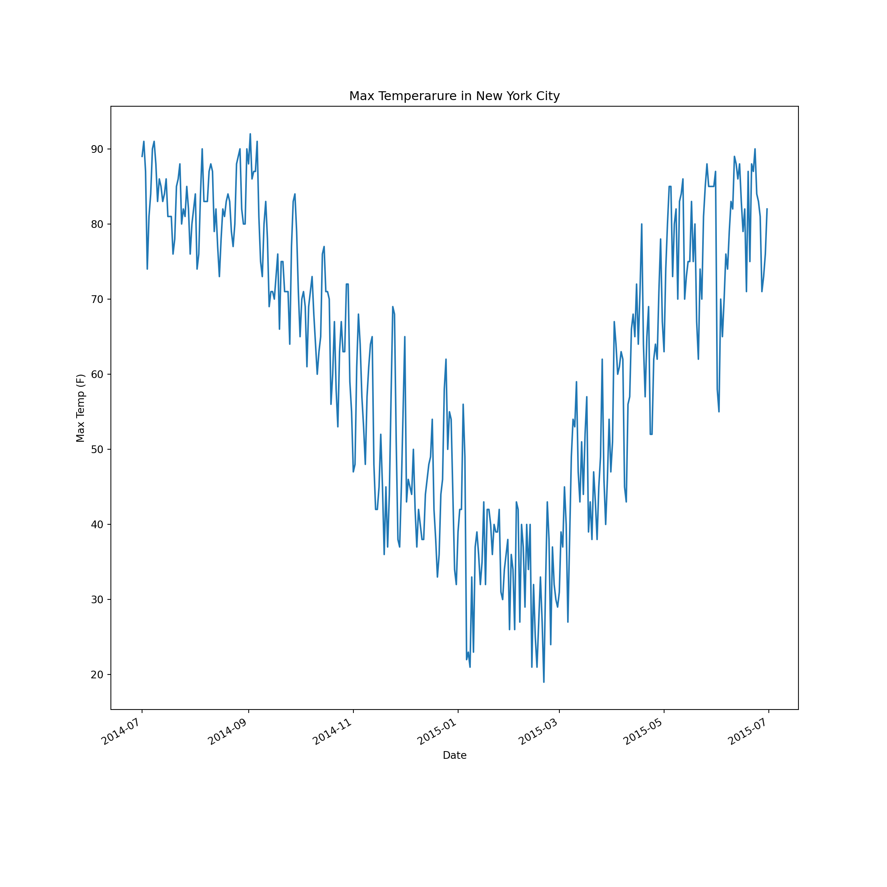

Chapter 7 Working in Python
In this section, we will cover important computing fundamtentals using the python programming language. These fundamentals are transferrable between many programming languages so laying a strong foundation will prove benfeficial.
| If you are new to python, it is in your best interest to review some of the matieral at https://www.w3schools.com/python/ for foundational skills. |
7.1 Python Introduction
Python is an interpreted programming language that is known for its simplicity, readability, and small learning curve. Python is one of the most popular programming languages used today and learning to use Python will provide fundamental computing skills.
For this tutorial, it is easiest to use a Jupyter Notebook. Create a new notebook and select Python as the language. Before starting the tutorial, add the follow imports at the top of your notebook:
# These are helpful packages that will aid our work through the tutorial!
import sys
import csv
import requests
from collections import defaultdictknitr::opts_chunk$set(echo = TRUE, engine.path = list(python = ‘/Library/Frameworks/Python.framework/Versions/3.7/bin/python3’))
7.2 Reading Data, Conditionals, Loops
The data for this tutorial can be found at https://raw.githubusercontent.com/fivethirtyeight/data/master/us-weather-history/KNYC.csv. The data is in CSV format meaning that each new value is seperated by a comma. Take a look at the raw data by visiting the link. It is data on weather patterns in NYC during parts of 2014 and 2015.
Now that we know the format of the data, lets read it into our Notebook.
# open the file directly from the link
file = requests.get("https://raw.githubusercontent.com/fivethirtyeight/data/master/us-weather-history/KNYC.csv").textRight now, the file is a string. To work with our data, we need to clean it and get it to a format for better analysis. To start, we will need to remove any unneccessary whitespace and create a list where each element is a new line.
# strip() - method that removes whitespace
# split("\n") - method that returns a list of values broken by input characters from the input string.
file = file.strip().split('\n')Our file is now a list, where each element is one row (run print(file) if you would like to check). Our objective is to make each element of the list, a new list! We can easily do this using a for loop. A for loop will iterate over a sequence (i.e lists, dictionaries, tuples, sets) and perform itertive commands in the loop. Lets try to clean our data some more.
# for each element of the list, split the element by comma to make sublists
for row in range(len(file)):
file[row] = file[row].split(",")Great, our data is cleaned! Let’s view our file with a loop:
## ['date', 'actual_mean_temp', 'actual_min_temp', 'actual_max_temp', 'average_min_temp', 'average_max_temp', 'record_min_temp', 'record_max_temp', 'record_min_temp_year', 'record_max_temp_year', 'actual_precipitation', 'average_precipitation', 'record_precipitation']
## ['2014-7-1', '81', '72', '89', '68', '83', '52', '100', '1943', '1901', '0.00', '0.12', '2.17']
## ['2014-7-2', '82', '72', '91', '68', '83', '56', '100', '2001', '1966', '0.96', '0.13', '1.79']
## ['2014-7-3', '78', '69', '87', '68', '83', '54', '103', '1933', '1966', '1.78', '0.12', '2.80']
## ['2014-7-4', '70', '65', '74', '68', '84', '55', '102', '1986', '1949', '0.14', '0.13', '1.76']Notice that the first line is the header line and the rest of the lines are data for the corresponding headers. Let’s take a look at the maximum temperature on the first five days listed in the data set.
## date actual_max_temp
## 2014-7-1 89
## 2014-7-2 91
## 2014-7-3 87
## 2014-7-4 74
## 2014-7-5 817.3 Pandas and Numpy
While our data is already organized well, more complex analysis with data in this format can get tedious. A popular data maniputlation and analysis software is called Pandas. Let’s explore the functionality of Pandas!
To start, let’s create the list of headers:
## ['date', 'actual_mean_temp', 'actual_min_temp', 'actual_max_temp', 'average_min_temp', 'average_max_temp', 'record_min_temp', 'record_max_temp', 'record_min_temp_year', 'record_max_temp_year', 'actual_precipitation', 'average_precipitation', 'record_precipitation']Next, we will reformat our original list of data so that the headers are removed:
import datetime
data = file[1:] # remove header
for row in data: # convert data from strings to floats
for i in range(0,13):
if i == 0:
row[i]= datetime.datetime.strptime(row[i],'%Y-%m-%d')
else:
row[i] = float(row[i])Lastly, we will place our data into a pandas dataframe:
import pandas as pd
df = pd.DataFrame(data, columns = headers)
df.head() # .head() is a way to view the first 5 rows of the dataframe## date actual_mean_temp ... average_precipitation record_precipitation
## 0 2014-07-01 81.0 ... 0.12 2.17
## 1 2014-07-02 82.0 ... 0.13 1.79
## 2 2014-07-03 78.0 ... 0.12 2.80
## 3 2014-07-04 70.0 ... 0.13 1.76
## 4 2014-07-05 72.0 ... 0.12 3.07
##
## [5 rows x 13 columns]Great! Now we can perfom analysis very easily on our data! For example, we can find some very valuable statistics with one simple command!
## actual_mean_temp ... record_precipitation
## count 365.000000 ... 365.000000
## mean 54.736986 ... 2.386137
## std 18.679979 ... 1.045702
## min 11.000000 ... 0.860000
## 25% 39.000000 ... 1.690000
## 50% 58.000000 ... 2.160000
## 75% 72.000000 ... 2.750000
## max 85.000000 ... 8.280000
##
## [8 rows x 12 columns]Pandas is a very poweful tool! More about pandas can be learned at https://pandas.pydata.org/pandas-docs/version/0.25.3/.
7.4 Vizualizations with Matplotlib
Lastly, we can make a simple vizualization of our data using another package called Matplotlib. It is a plotting library for the python programming langauge.
import matplotlib.pyplot as plt
fig, ax = plt.subplots(figsize=(12, 12))
y =df['actual_max_temp']
x=df['date']
ax.plot(x,y)
ax.set(xlabel="Date", ylabel="Max Temp (F)", title="Max Temperarure in New York City")## [Text(0, 0.5, 'Max Temp (F)'), Text(0.5, 0, 'Date'), Text(0.5, 1.0, 'Max Temperarure in New York City')]
Matplot has much more funtionality than this simple example. Refer to the documentation at https://matplotlib.org/3.2.1/contents.html for more information!